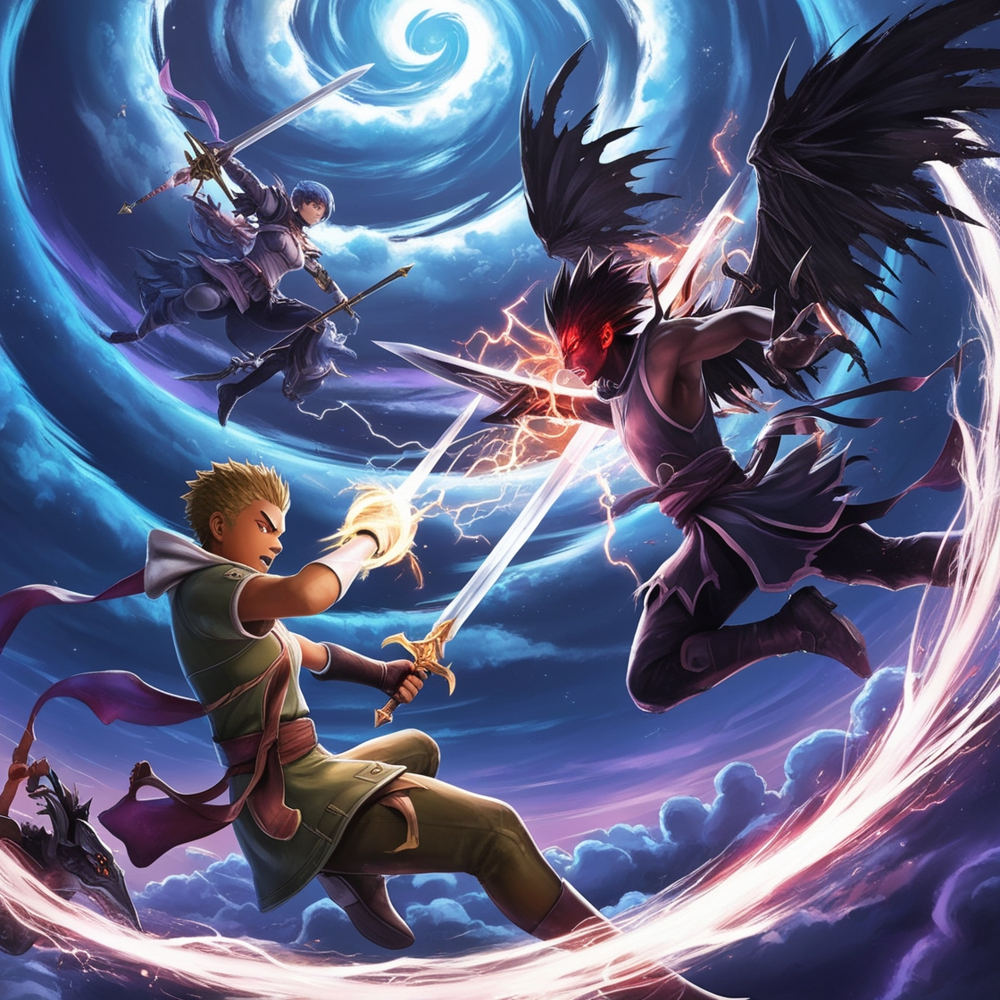

Pinup - Fight in the Sky
Pinup - Fight in the Sky hızlı tempolu bir oyundur. Oyuncular gökyüzünde destansı savaşlara katılarak düşmanı yok etmeye çalışıyorlar. Dinamik savaş mekaniği, modern silahlar ve gerçekçi grafiklerle Pinup - Fight in the Sky, oyunculara unutulmaz bir deneyim sunuyor. Hem tekli hem de çok oyunculu modlarda gökyüzüne hükmedin!
Oynamak
